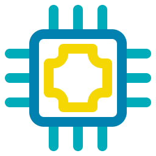

ZULOETA LOPEZ MIRELLA
Mi web Personal
NOTICIAS
¿Qué pasara con tu WhatsApp si no aceptas las nuevas condiciones de uso de la plataforma antes del 15 de mayo?
 WhatsApp fijó para este sábado el límite de tiempo que le da a sus millones de usuarios para que acepten los nuevos términos y condiciones de uso que causaron una oleada de críticas a la plataforma a comienzos de este año.
Con sus nuevos términos, la plataforma está pidiendo a sus usuarios (excepto a los que residen en la región europea) que acepten compartir metadatos con Facebook, la firma matriz del servicio de mensajería.
A partir de este sábado, quienes no acepten la nueva actualización comenzarán a recibir mensajes persistentes recordándoles que deben aceptar los nuevos términos.
WhatsApp fijó para este sábado el límite de tiempo que le da a sus millones de usuarios para que acepten los nuevos términos y condiciones de uso que causaron una oleada de críticas a la plataforma a comienzos de este año.
Con sus nuevos términos, la plataforma está pidiendo a sus usuarios (excepto a los que residen en la región europea) que acepten compartir metadatos con Facebook, la firma matriz del servicio de mensajería.
A partir de este sábado, quienes no acepten la nueva actualización comenzarán a recibir mensajes persistentes recordándoles que deben aceptar los nuevos términos.
IBM: el "gran avance" en la industria de los microchips que puede multiplicar por 4 la vida de tu batería

Sólo dos nanómetros. Es decir, muy, muy pequeño.
IBM dice que ha logrado un avance significativo en el mundo de los procesadores al crear un chip de 2 nanómetros (nm) en su laboratorio de pruebas.
Los avances en el mundo de los microchips se miden en nanómetros, y cuanto más bajo es el número mayor es el salto adelante.
IBM afirma que su chip puede mejorar el rendimiento en un 45% con respecto a los actuales de 7 nm.
También es más eficiente desde el punto de vista energético: utiliza un 75% menos de energía para igualar el rendimiento actual, dice IBM.